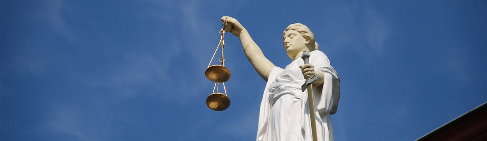
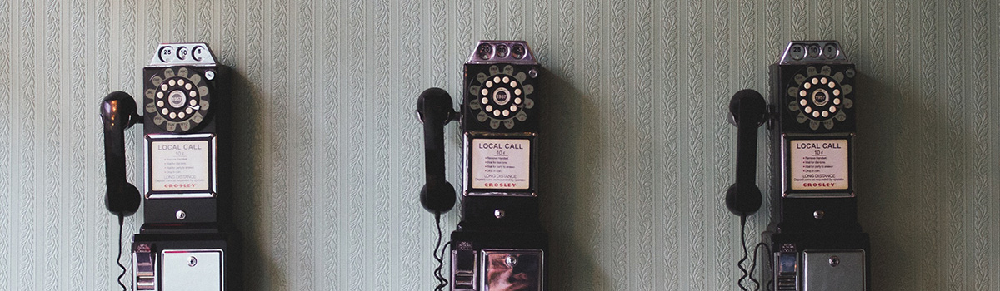

공정거래자율준수프로그램
유한양행은 창업자 유일한 박사의 창업이념을 계승∙발전시키고 기업의 새로운 가치를 창조하기 위하여 2007년 공정거래자율준수
프로그램(Compliance Program)을 도입하여 모범적인 준법경영시스템을 구축하였습니다. 전 임직원은 CP를 적극 준수하여 모든 경영 활동이 투명하고, 공정하게 수행되고, 공정거래 관련 법령이 철저하게 지켜질 수 있도록 노력하고 있습니다.
-
- CP 프로세스
- CP란 기업이 공정거래 관련 법규를 준수하기 위해서 자체적으로 제정·운영하는 내부준법시스템 및 행동규범을 통해 운영되고있습니다.
-
- CP 교육활동
- 유한의 정신인 신의, 성실, 정직을 몸에 익혀 진취적이고 준법적인 기업문화가 정착될 수 있도록 CP교육을 활성화하고 있습니다.
부패방지경영시스템
글로벌 부패방지 규제는 투명성·뇌물 금지 및 경제활동 선진화를 강조하며, 공공 영역 뿐만 아니라 민간 기업에도 기업 차원의 상당한 주의 노력을 요구하고 있습니다.
부패방지경영시스템은 국제표준화기구가 국제 사회와의 합의를 통해 마련한 표준으로, 기업의 부패 및 부패리스크를 예방하기 위한 조직 운영 방침과 절차를 규정하고 있으며, 모든 조직에서 부패방지경영시스템 적용이 가능할 수 있도록 기획∙설계되어 있습니다.
인증
유한양행은 부패행위의 근절을 통한 준법문화 확산과 기업의 경쟁력 확보 및 지속가능한 경영 환경조성을 목표로 2018년 3월 부패방지경영시스템 인증을 획득하였습니다. 부패방지경영시스템 인증을 통해 회사의 잠재적 부패리스크를 인식하고 해결 방안을 제시하였으며, 부패방지에 대한 관심과 노력을 전사로 확대하게 되었습니다. 또한 유한양행 및 이해관계자의 청탁, 뇌물의 제안·제공 또는 수락 등의 부패행위에 대한 제보시스템을 구축하였습니다. 이러한 노력으로 유한양행은 부패와 관련된 법적 처벌 가능성을 낮추었으며 대내외적인 신뢰도를 높였습니다.
운영방안
유한양행은 부패방지경영시스템을 지속적으로 운영하고 발전시켜 나가고 있습니다. 정기적 부패방지 교육 및 서약을 통해 부패방지 의식 제고와 부패방지문화가 정착될 수 있도록 노력하고 있습니다. 부패방지경영시스템 운영에 대한 효과성 및 부패방지 성과를 평가하고 과거, 현재, 미래의 리스크까지 아우르는 부패리스크의 주기적인 식별, 분석, 평가를 통해 안정적이고 견고한 시스템으로 발전시켜 나가고 있습니다. 또한 사업관계자에 대한 교육 및 부패방지방침의 제공을 통해 유한양행의 부패방지에 대한 확고한 의지가 대내외에 전파될 수 있도록 노력하고 있습니다.
부패행위신고
유한양행 및 이해관계자의 부패행위나 충분히 부패로 인지될 수 있는 경우, 이에 대한 제보를 받고 있습니다.
-
신고안내
- 화상교육
- 구축된 화상회의시스템을 통해 시간∙장소에 구애받지 않고 신속하게 대응할 수 있도록 화상교육을 실시
- 제보대상
- 유한양행 및 이해관계자의 청탁, 뇌물의 제안∙제공 또는 수락 등의 부패행위
- 제보자 보호
- 유한양행은 제보자의 신상 및 제보 내용을 철저히 비밀로 유지하며 제보자의 권리를 보호
-
신고방법
E-mail abms@yuhan.co.kr 우편 (06927) 서울 동작구 노량진로 74 ㈜ 유한양행 18층 CP팀 전화 02-828-0541 팩스 02-828-0599 유의사항 1. 제보하신 분의 E-mail을 남겨주시면 조사 결과를 빠른 시일 내에 E-mail로 통보해 드리겠습니다. 다만 E-mail 주소가 부정확할 경우 조사 결과에 대한 통보가 불가할 수 있습니다.
2. 제보내용이 부족하거나 불충분할 경우, 또는 타인에 대한 근거 없는 비방행위일 경우 처리가 지연되거나 불가할 수 있습니다.
3. 유한양행 임직원의 경우 회사 내부제보시스템으로 제보하여 주시기 바랍니다.